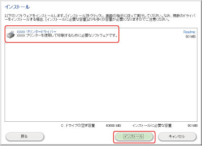
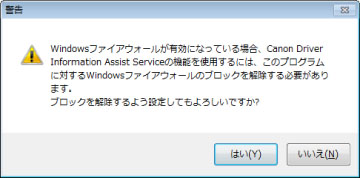
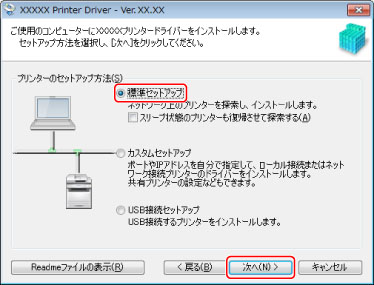
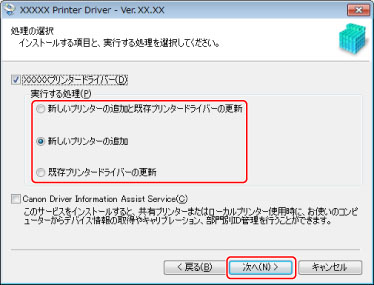
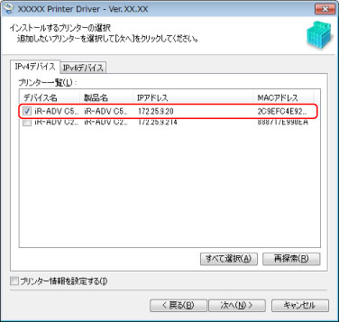
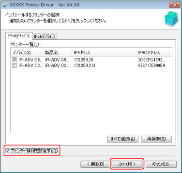
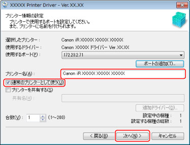
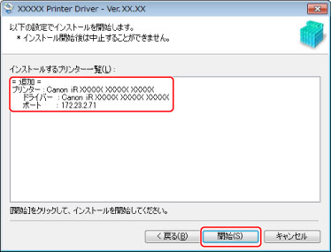
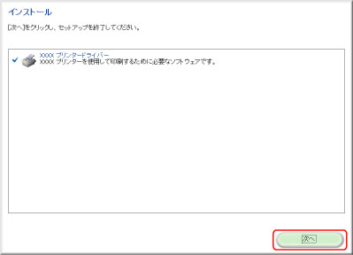

ネットワーク上にあるデバイスを自動検索して、ドライバーをインストールします。
|
重要
|
|
コンピューターを起動した際に、必ずAdministratorsのメンバーとしてログオンしてください。
お使いのコンピューターと同じサブネット内のデバイスのみ探索できます。
本手順は、TCP/IPネットワーク環境でのみ実行できます。お使いのネットワーク環境がわからない場合は、ネットワーク管理者にご確認ください。
|
1.
インストーラーを起動
ホームページから最新版ドライバーをダウンロードする場合（32bit版/64bit版）：
キヤノンホームページ（http://canon.jp/）からSetup版ドライバーをダウンロード
ダウンロードしたファイルをダブルクリックして解凍 → 手順
2.へ
解凍してもインストーラーが自動的に起動しない場合には、［Setup.exe］をダブルクリック → 手順
2.へ
CD-ROMをコンピューターにセット
［インストール］をクリック
ドライバーを確認 → ［インストール］をクリック→手順
2.へ

|
メモ
|
|
CD-ROMメニューが表示されない場合は、以下の手順を行ってください。
Windows 8/8.1/Server 2012/Server 2012 R2：
「タップして、このディスクに対して行う操作を選んでください。」メッセージが表示されたとき：このメッセージをタップ（またはクリック）し、[MInst.exeの実行]をタップ（またはクリック）
Windows のエクスプローラーが表示されたとき：［MInst.exe］をダブルクリック
何も表示されないとき：デスクトップのエクスプローラーをクリックして、[コンピューター]のCDアイコンをダブルクリック
Windows Vista/Server 2008/7：
［自動再生］ダイアログボックスが表示されたとき：［MInst.exeの実行］をクリック
Windows のエクスプローラーが表示されたとき：［MInst.exe］をダブルクリック
何も表示されないとき：［  ］（スタート）－［コンピュータ］（または［コンピューター]）のCD-ROMアイコンをダブルクリック Windows XP/Server 2003：
［マイコンピュータ］でCD-ROMアイコンをダブルクリック → ［MInst.exe］をダブルクリック
上記の［MInst.exe］がない場合は、[Setup.exe]をダブルクリックしてください。
32bit版：32BIT\Setup.exe
64bit版：x64\Setup.exe
|
使用許諾契約書の内容を確認 → ［はい］をクリック
以下の画面が表示されたときは、［はい］または［いいえ］をクリックします。

［はい］：Canon Driver Information Assist Serviceに対するWindowsファイアウォールのブロックが解除され、デバイス情報取得や部門管理を行えるようになります。（→
Canon Driver Information Assist Serviceのインストール）
［いいえ］：Canon Driver Information Assist Serviceは使用できなくなります。
[Readmeファイルの表示]をクリック→内容を確認
[標準セットアップ]を選択→[次へ]をクリック

［スリープ状態のプリンターも復帰させて探索する］：ネットワーク上にあるスリープ状態のデバイスも探索する場合に選択します。
5.
必要に応じて項目を選択 →［次へ］をクリック

［実行する処理］：すでにドライバーがインストールされている場合に表示されます。必要に応じて、既存のドライバーに対する処理を選択します。
［Canon Driver Information Assist Service］：このサービスがインストールされていない場合に表示されます。共有プリンター環境で、デバイスの情報取得、および部門管理機能を使用するとき、プリントサーバーにこのサービスをインストールします。以下の画面が表示されたときは、［はい］または［いいえ］をクリックします。
［はい］：Canon Driver Information Assist Serviceに対するWindowsファイアウォールのブロックが解除され、デバイス情報取得や部門管理を行えるようになります。
［いいえ］：Canon Driver Information Assist Serviceは使用できなくなります。
［プリンター一覧］からインストールするデバイスを選択

Windows Vista/Server 2008/7/8/8.1/Server 2012/Server 2012 R2をお使いの場合、［IPv4デバイス］/［IPv6デバイス］タブをクリックして、表示を切り替えることができます。
［プリンター一覧］にデバイスが表示されない場合は、［再探索］をクリックします。
［再探索］をクリックしてもデバイスが探索されない場合は、「
ポートを設定してインストール」を参照してインストールしてください。
7.
デバイス名を変更する場合や、通常使うデバイスとして設定する場合は、［プリンター情報を設定する］を選択 → ［次へ］をクリック

上記を設定しない場合は、［次へ］をクリックし、手順
9.に進みます。
8.
必要に応じて［プリンター名］を変更 → 通常使うデバイスとして設定する場合は、［通常のプリンターとして使う］を選択 → ［次へ］をクリック

デバイスを共有設定する場合は、［プリンターを共有する］を選択します。（→
プリントサーバーの設定）
［インストールするプリンター一覧］を確認 → ［開始］をクリック

以下の画面が表示されたときは、[次へ]をクリック

［再起動］（または［終了］）をクリック
Windowsコントロールパネルの［デバイスとプリンター］（または［プリンタとFAX］/[プリンタ]）に、インストールしたデバイスが表示されます。
以上でインストールの作業が終了しました。